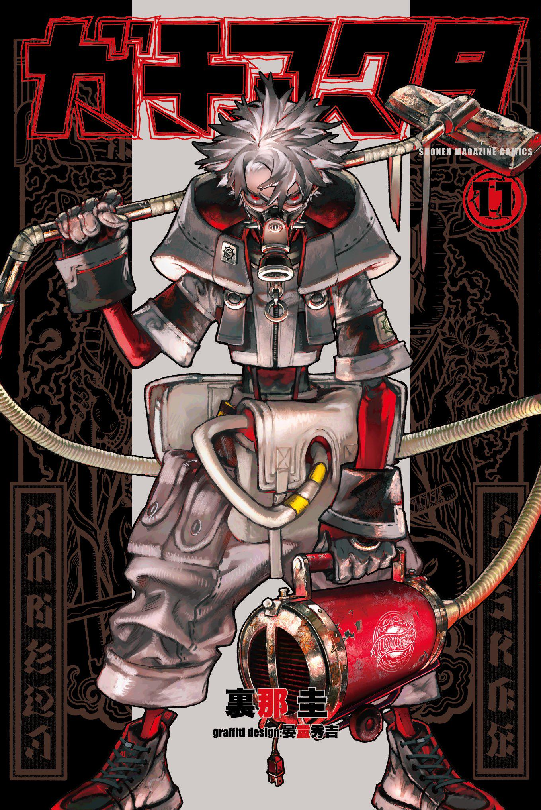
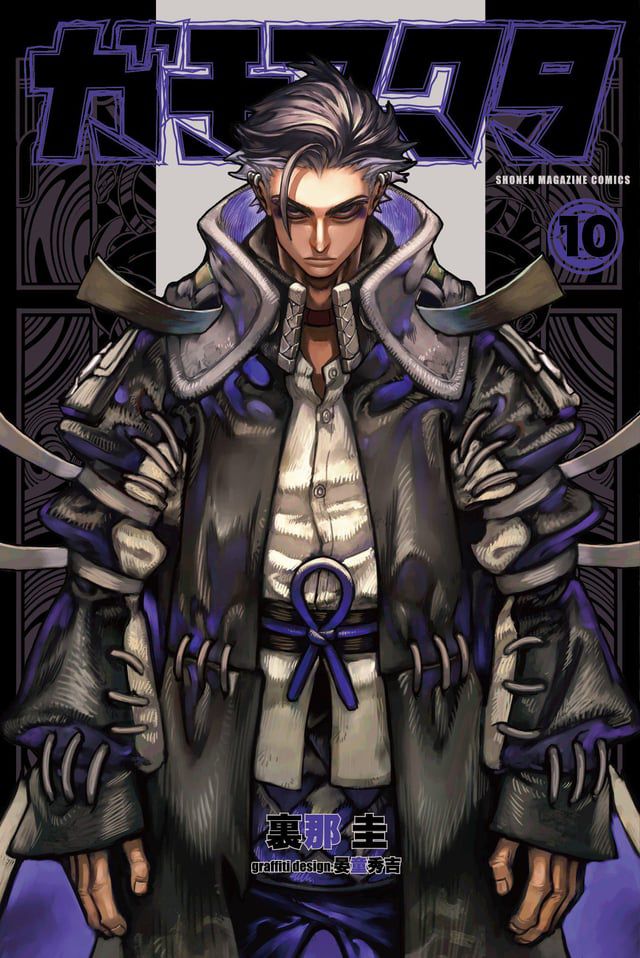
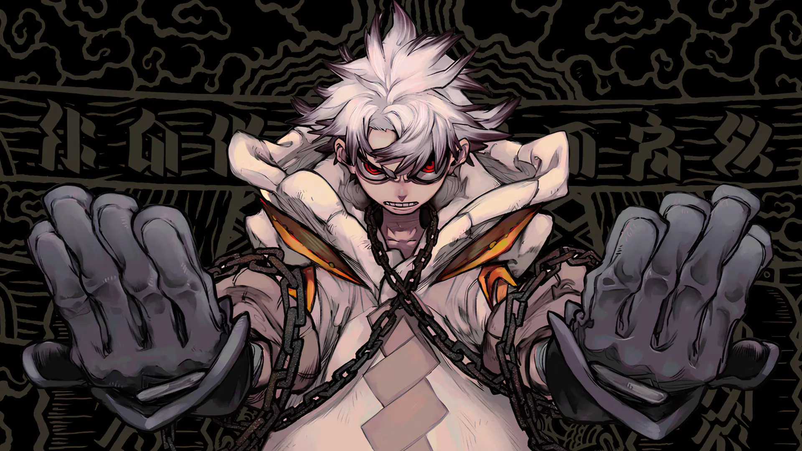

Story Arcs: Survival, Power, Revenge

ARC TWO: RISING CLEANERS
Allies, Skills & Betrayals

ARC ELEVEN: FORTIFICATIONS
Rudo’s Awakening

In a floating city where the rich discard their waste and people Rudo is framed for murder and thrown into the Pit, where a hellscape of mutated trash beasts dwell. To survive, he must wield a new power and join the rogue Cleaners. Rudo doesn’t just aim to battle monsters but the corrupt who cast him into Hell.

A survivor forged in the Pit, wielding mysterious powers to fight monsters and uncover the city’s corruption.
Strategic and unflinching, he guides the Cleaners through chaos with precision and unyielding loyalty
A fearless fighter whose skills border on the extraordinary, turning the tide in the darkest battles.
Unpredictable and violent, he thrives on chaos, striking fear into anyone who crosses his path.
A cunning manipulator, pulling strings from the shadows and turning allies into enemies.
A relentless brute, enforcing the Raiders’ rules with strength, intimidation and deadly efficiency.
Rudo’s story is far from over. The Pit still hides deadly secrets, monsters, and the corrupt elite above. But for every shadow, there’s a Cleaner ready to fight. Are you ready to step into the chaos?